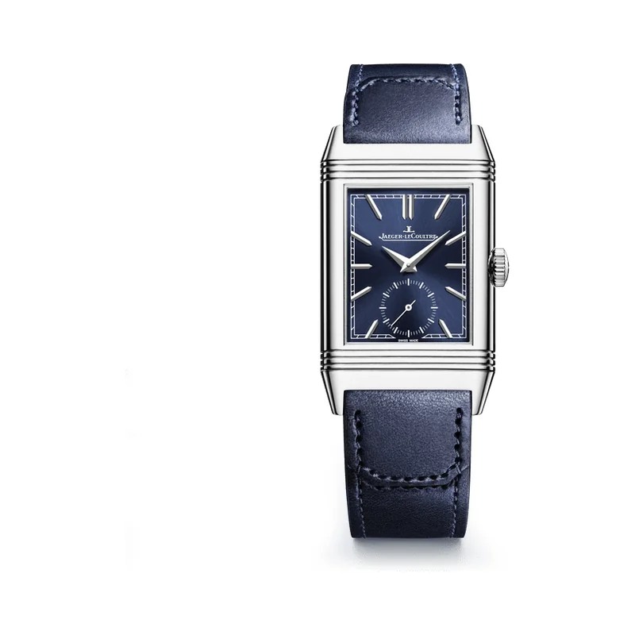

Encyclopedia / Jaeger-LeCoultre / Reverso Tribute Small Seconds

No real new deal right now · checked Oct 19, 2026, 10:07 PM ET
$10,800 – $12,750 pre-owned street range
Q397848J (only 5 listings)
No new Q397848J found at Jomashop or WatchMaxx. The pre-owned market for this exact ref is thin: Chrono24 showed only 5 listings, asking about $10,800 to $12,750.
What it really costs
| Market | Price | Source |
|---|---|---|
| Jaeger-LeCoultre US price | $12,000 | jaeger-lecoultre.com |
| Grey-market new | No listing found | — |
| Pre-owned | about $10,800 – $12,750 (5 listings) | Chrono24 |
All prices in USD, checked Oct 19, 2026 (ET). Pre-owned ranges are the middle 80% of asking prices on the first Chrono24 results page for that ref (about 60 listings, used and some unworn), fixed-price listings only. Grey-market = brand-new from a non-authorized dealer.
Buying guide
Key references
| Ref. | What it is | US retail |
|---|---|---|
| Q397848J | Reverso Tribute Monoface Small Seconds, steel, blue sunray dial, manual-wind Calibre 822 | $12,000 |
Which one I'd pick
New vs pre-owned: with no grey-market discount and only a handful of used ones listed, buying from Jaeger-LeCoultre or an authorized dealer at $12,000 is the straightforward choice.
What to check before you buy
- Swivel mechanism: the case should flip smoothly and lock firmly in both positions.
- Water resistance: only 3 bar. It's a dress watch.
- Ref check: Reverso Tribute comes in many versions (Duoface, other dials). Match Q397848J before comparing prices.
Alternatives worth a look
- Cartier Tank Must: The other great rectangular icon, much cheaper. (33.7 x 25.5 mm steel (large), High-autonomy quartz, retail $4,400 (CRWSTA0106, large, steel bracelet, Cartier US); WSTA0041 no longer listed)
- IWC Portugieser Chronograph: A classic dress chronograph, below retail. (41 mm stainless steel, Calibre 69355, retail $9,200)
- Grand Seiko Heritage Collection 'Snowflake': Another watch bought for its dial and finishing. (41 mm high-intensity titanium, Calibre 9R65 Spring Drive, retail $6,900)
History
In 1930, businessman César de Trey was challenged to find a way to protect a watch's glass for polo players, and Jaeger-LeCoultre's answer was a case that swivels over to hide the dial.
The Reverso followed in 1931, and the Tribute line pays homage to the colourful Reverso models made that year.
The Q397848J is the steel Monoface Small Seconds: 45.6 x 27.4 mm, 8.51 mm thick, with a blue sunray dial and the manual-wind Calibre 822, about 42 hours of power reserve.
The name comes from the Latin for 'I turn around'.
Specifications
| Brand | Jaeger-LeCoultre |
|---|---|
| Model | Reverso Tribute Small Seconds |
| Key references | Q397848J |
| Launch year | 1931 |
| Case | 45.6 x 27.4 mm stainless steel |
| Thickness | 8.51 mm |
| Frequency | 3 Hz |
| Movement | Calibre 822/2, manual-wind |
| Power reserve | 42 hours |
| Water resistance | 30 m |
| Approx. US retail (Oct 2026) | $12,000 |
Specs from the brand's official product page for the main reference. Retail prices are list prices, not market value, and change often.
Highlights
- Swivelling reversible case
- Art Deco gadroons
- Engravable caseback
FAQ
How much is a JLC Reverso Tribute Small Seconds?
Jaeger-LeCoultre's US site lists the Q397848J at $12,000 (checked Oct 19, 2026). I found no grey-market new listing, and only 5 pre-owned ones on Chrono24.
Why does the Reverso flip?
It was designed so polo players could turn the case over and protect the glass.
Is the Reverso Tribute manual-wind?
Yes. The Q397848J uses the manual-wind Calibre 822 with about 42 hours of power reserve.
What size is the Reverso Tribute?
45.6 x 27.4 mm and 8.51 mm thick.
Want this watch for less?
Every week I hunt down genuine deals on watches like the Reverso Tribute Small Seconds and send the best ones. Free, one email a week.
Get the free weekly issuePrices and availability last checked Oct 19, 2026. No affiliate links: I don't earn anything if you buy. Sources are listed in our research notes and linked above.